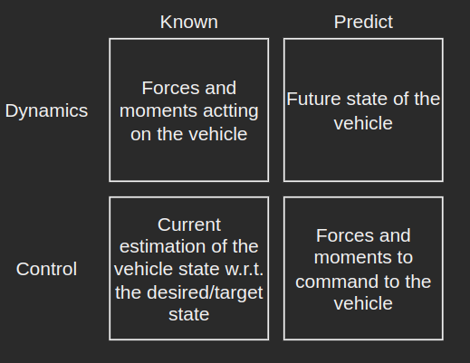

If we lived in a perfect world, a model of the vehicle dynamics would be all we need.
It will tell us how to design vehicle inputs [the motor turn rates] that result in a
desired motion and the vehicle controls problem would be solved. In the real world,
the control problem is all about managing the messiness of the real world,
and making sure the vehicle achieves the task in spite of the sources
that cause the error in achieving the target.
What is dynamics?
Dynamics is the branch of classical mechanics that is concerned with the study of
forces and their effects on motion. It is concerned with the motion of material
objects in relation to the physical factors that affect them: force, mass, momentum,
and energy.
The dynamics problem vs the control problem
In dynamics, we try to understand the forces/moments acting on the vehicle.
We can then predict the future state of the vehicle. When we solve a control's problem,
we go the other way. We start with the desired motion and then we determine what forces
and moments we need to command to the vehicle, based on our current knowledge of the state
of the vehicle compared to the target state.

Dynamics vs Control
Main steps in solving a control problem
First, model the dynamics of the vehicle by implementing an advance state
function